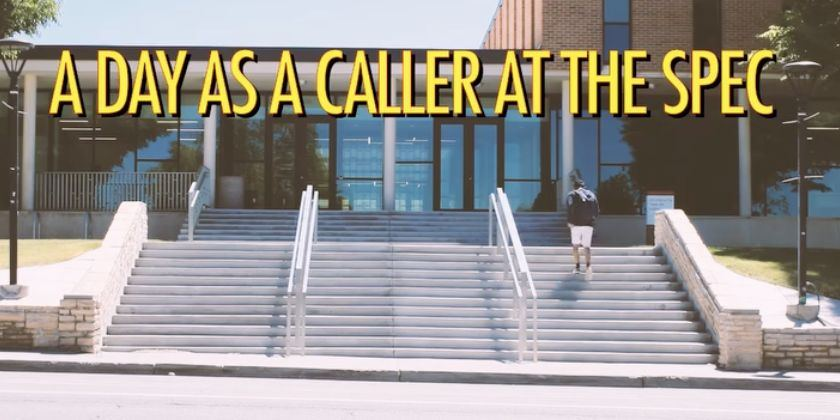
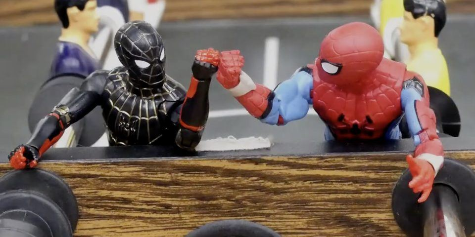

Short films and social content
I produce, shoot, light and edit, from 16mm black and white film and stop-motion to Reels for campus teams.

Exit to Infinity
Producer, Lighting Designer, Assistant Editor
On his way to work, a man accidentally hits someone, and then finds himself trapped in an endless tunnel.
Watch on YouTube ↗
Delusion
Writer, Director, Cinematographer, Editor
A man can't let go of his parents. He dresses up as them and pretends they are still home.
Watch on Vimeo ↗
Coffee
Director, Cinematographer, Editor, Producer
A sleepy student drinks coffee to stay awake before class, and still falls asleep.
Watch on Vimeo ↗
A Day As a Caller
Producer, Editor
A day in the life of a student caller at the Student Philanthropy and Engagement Center.
Watch on Instagram ↗
Spider-Man Home Invasion
Director of Photography, Producer, Editor
A 1.5-minute stop-motion made with action figures, in a team of four.
Watch on YouTube ↗Content creation
As Social Media Manager for the Student Philanthropy and Engagement Center at the University of Utah, I made 4 or more short videos a month for Instagram, averaging over 1,500 views, and ran the content calendar for a 60-person student team. Now I'm the Social Media Assistant at the ETC.
- Trending funny ReelInstagram Reel, 2024
- Halloween Party ReelEvent coverage, 2024
- Feed U Pantry IntroductionGraphic video made in Canva, 2024
More work: 3D & Animation